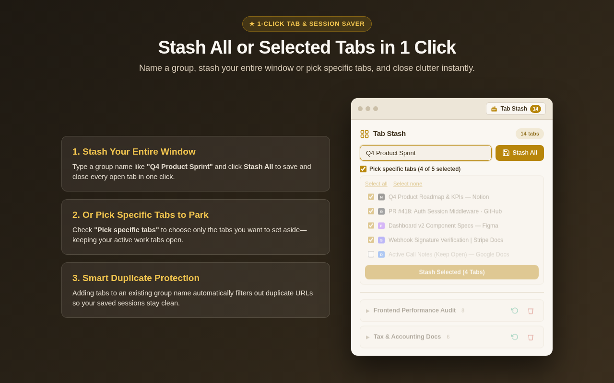
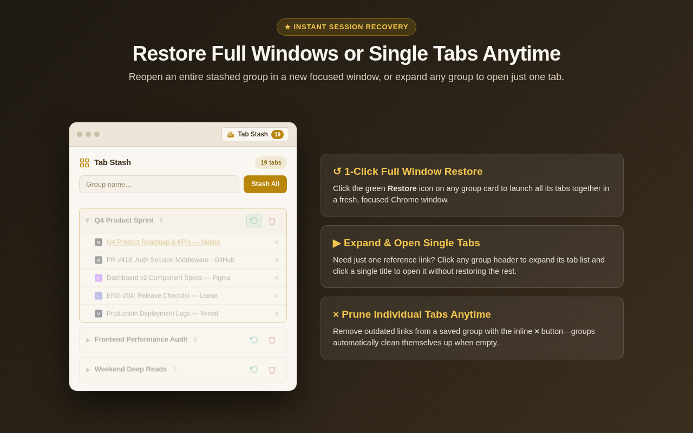
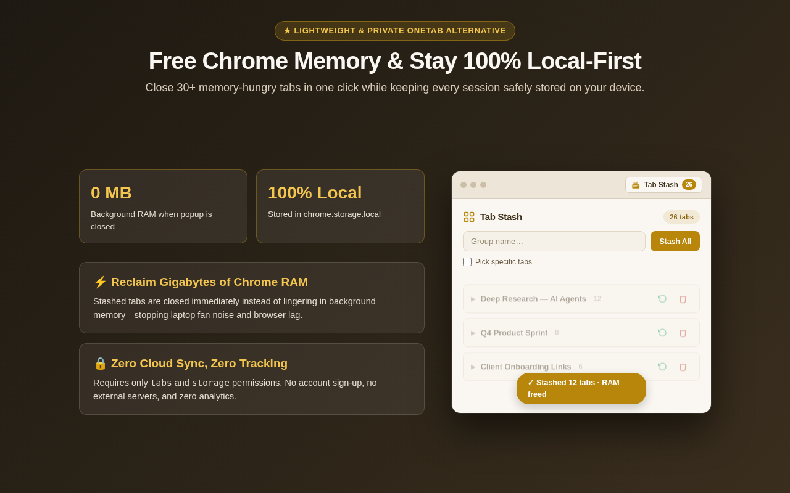

Save & Restore Open Browser Tabs, Groups & Sessions in 1 Click
Stop losing important research inside 50+ open Chrome tabs. Stash your entire window—or pick specific tabs—into clean, named groups to free Chrome memory immediately.
❌ Before Tab Stash
- 45+ tiny tab favicons eating 4 GB of Chrome RAM
- All-or-nothing tab dump extensions that close the tabs you are still actively working on
- Hundreds of unsorted timestamp links you never find again
✅ With Tab Stash for Chrome
- Stash All or Pick Specific Tabs: Check only the tabs you want to park and keep your active work open
- Named Session Cards: Organize by project, ticket, or trip with automatic URL deduplication
- 1-Click Window or Single-Tab Restore: Reopen the whole session in a fresh window or click a single link

1. Name a group and stash all open tabs—or use the checkbox picker to park only selected tabs.

2. Restore an entire stashed group into a clean Chrome window in one click, or open individual tabs on demand.

3. Reclaim gigabytes of browser RAM while keeping 100% of your session data stored locally on your machine.
Frequently Asked Questions
Is there a Tab Stash extension for Chrome?
Yes! Tab Stash: Save Tabs & Tab Session Manager is built specifically for Google Chrome, Brave, Microsoft Edge, and Chromium browsers. You can install it free from the Chrome Web Store.
How do I save only specific open tabs in Chrome?
Open the Tab Stash popup, type a group name, check Pick specific tabs, uncheck the tabs you want to keep open, and press Stash Selected. Only the checked tabs are saved and closed.
Where does Tab Stash store my saved tabs?
All saved tab groups live strictly on your own computer inside Chrome's native chrome.storage.local storage. There are no external servers, no accounts, and zero analytics trackers.